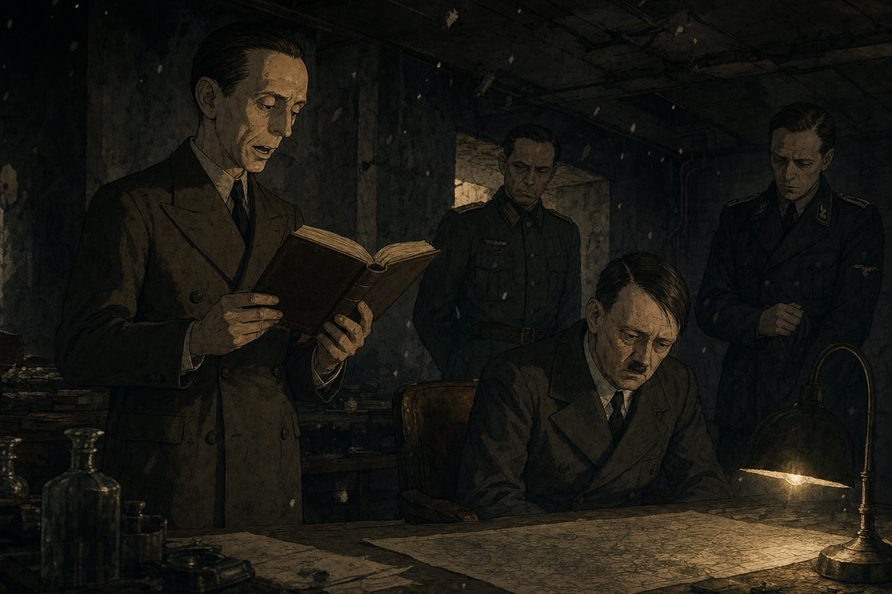

calvincollins · xyz
The Research
The Ghost of Times
Ad Tech
The Pamphlets
The Forecast Desk
Connections
Glossary
Quiz
Wrapped
About
A paper of writer-voiced op-eds
The Ghost of Times
No. 07
Thursday, June 18, 2026
6 writers

◐ Theme